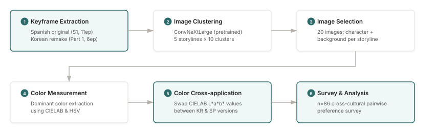

Color grading in a drama and its remake
Do viewers prefer the color grading of a Korean remake over the original, and is that preference about the colors or about who is watching?
problem
Color grading is a defining visual element of Korean dramas, but earlier research had two blind spots. Some studies compared the colors of different dramas without connecting them to what viewers prefer. Others measured preference with artificially shifted colors that had nothing to do with real content.
This study joins the two. It takes the actual color properties of the Spanish original Money Heist (La Casa de Papel) and its Korean remake Money Heist: Joint Economic Area, applies each version's grading to the other's images, and asks viewers which they prefer. Because the same scene appears in both gradings, color is the only thing that changes.
The question has two parts. First, given the same scene, which grading do viewers pick? Second, if there is a preference, does it come from the colors themselves or from who the viewer is: their nationality, their streaming habits, or whether they had already seen one of the two versions?
my part
First author: research design, color analysis in CIELAB and HSV, survey design and statistical analysis, under the supervision of Prof. Hoyoung Yoon.
approach
The hard part was a fair comparison: isolating color grading from everything else in a scene. The study uses a six-stage pipeline.

- Keyframes. Extracted keyframes from the Spanish original (season 1, 11 episodes) and the Korean remake (part 1, 6 episodes), and removed duplicate compositions by comparing image vectors.
- Clustering. Clustered frames with ImageNet-pretrained ConvNeXtLarge across 5 aligned storylines, 10 clusters each, so scenes are grouped by what they look like rather than by captions or metadata.
- Selection. Picked one character scene and one background scene per storyline, 20 images in total. Character and background images were kept apart because color works differently for each. Violent and shooting scenes were excluded.
- Measurement. Extracted dominant colors in CIELAB, for perceptual color differences, and in HSV, for saturation and brightness.
- Cross-application. Applied each drama's CIELAB L*a*b* values to the other version's images, so every scene exists with both Korean and Spanish grading. Unlike earlier studies that shifted RGB values by hand, this keeps the palettes viewers actually saw.
- Survey. Asked participants for pairwise preferences, and recorded nationality, number of OTT subscriptions and whether they had watched either version.

results
Evaluation scope: a pilot survey with 86 valid responses on pairwise comparisons of 20 images from one drama and its remake.
Across the full sample, images in the Korean remake's grading were preferred at 52.5%, versus 39.7% for the Spanish original's grading (t-test, p = 0.046). This held whichever version the source image came from.
Color properties, not personal traits
In a logit analysis, personal attributes (nationality, number of OTT subscriptions, and whether a participant had seen either version) did not consistently predict which grading they preferred. The preference followed the color properties of the images.
Harmony of saturation
The Korean grading is characterised less by contrast between light and dark than by saturation-based harmony: colors of similar chroma placed together. This is consistent with earlier comparisons of Korean and Japanese dramas by other researchers, and the Korean–Spanish comparison here points the same way.
What the result does and does not say
Because each scene was shown in both gradings, a preference for one grading cannot be explained by liking one show's scenes or actors more. That is the main reason for cross-applying measured colors instead of comparing frames from the two shows directly. What the study cannot separate is which part of the grading matters most; saturation harmony is the clearest difference in the measurements, but it was not manipulated on its own.
limitations
- This is a pilot: one drama and its remake, 20 images, and respondents who skew toward university students. More titles and a broader sample are needed before generalising.
- Character and background scenes were selected separately, but preference was not analysed separately for each; that comparison would strengthen the conclusions.
- The survey measured preference, not emotional response, so it says nothing about why a grading feels better.
- The study does not support claims about viewer engagement or commercial outcomes beyond the preference result above.
links
Yuna Sim, Hoyoung Yoon. "A Preference Analysis of Color: A Pilot Study Comparing the Drama Money Heist Original and Remake Versions." Journal of the Korean Data Analysis Society, Feb 2025. doi.org/10.37727/jkdas.2025.27.1.315